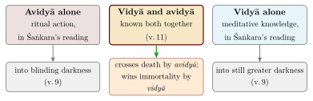
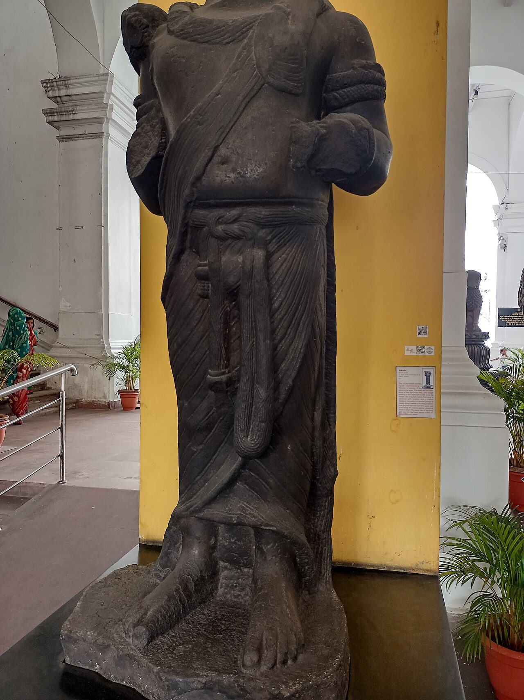
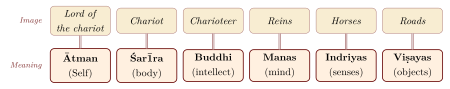
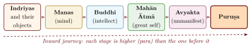
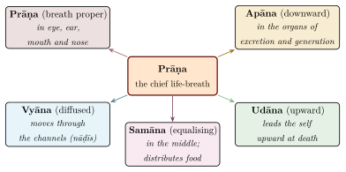

Chapter 2: The Mukhya Upaniṣads — Part I¶
This chapter reads the first four of the ten principal Upaniṣads in the traditional order: the Īśā, Kena, Kaṭha, and Praśna. Three of them are verse texts or open in verse; the Praśna is prose. All four belong, in the chronology of Chapter 1, to the later layers of the principal Upaniṣads. Each is treated in one section: its place in the Vedic corpus, its structure, its main teachings and the practices it prescribes. A last section shows how the commentators divided over them.
2.1 The Īśā Upaniṣad¶
2.1.1 Overview and Vedic Affiliation¶
The Īśā Upaniṣad, also known as the Īśāvāsya Upaniṣad, is the only principal Upaniṣad transmitted as part of a Saṃhitā: it forms the fortieth and last chapter of the Śukla Yajurveda Saṃhitā (Vājasaneyī Saṃhitā). As Section 1.12 explains, this position shows how the Vājasaneyins arranged their canon; it does not make the Īśā as old as the hymns before it, and its verse form places it with the later verse Upaniṣads.
Īśā Upaniṣad — Quick Reference
| Veda: | Śukla Yajurveda (Vājasaneyī Saṃhitā 40) |
| Verses: | 18 (some recensions have 17) |
| Metre: | Mainly anuṣṭubh, with some triṣṭubh |
| Central Theme: | The Lord pervading all; synthesis of knowledge and action |
| Key Teaching: | Enjoyment through renunciation; seeing the self in all beings |
| Ācārya Commentary: | Śaṅkarācārya’s Bhāṣya |
2.1.2 The Opening Verse¶
The Īśā opens with what is probably the most often quoted verse of the Upaniṣads:
īśā vāsyam idaṃ sarvaṃ yat kiñca jagatyāṃ jagat
tena tyaktena bhuñjīthā mā gṛdhaḥ kasya svid dhanam
Translation: “All this — whatever moves in this moving world — is pervaded by the Lord. Therefore, enjoy through renunciation. Do not covet; for whose is wealth?”
— Īśā Upaniṣad, Verse 1
The verse joins a claim and an injunction. The whole moving world (idaṃ sarvam) is pervaded, or in another reading “clothed”, by the Lord (īśā vāsyam); one should therefore enjoy (bhuñjīthāḥ) by means of what has been given up (tyaktena) and not covet. The commentators read the paradox in different ways. For Śaṅkara the verse is addressed to the renouncer, who “protects” the self by giving up the world; for many modern readers it describes a life of use without possessiveness.
2.1.3 The Synthesis of Vidyā and Karma¶
Verses 9–11 address the relation of knowledge (vidyā) and action (karma), a theme to which the later tradition constantly returned:
andhaṃ tamaḥ praviśanti ye’vidyām upāsate
tato bhūya iva te tamo ya u vidyāyāṃ ratāḥ
Translation: “Into blinding darkness enter those who worship ignorance (avidyā); into still greater darkness, as it were, enter those who delight in knowledge (vidyā) alone.”
— Īśā Upaniṣad, Verse 9
This verse has been the subject of extensive commentarial debate. Verse 11 continues: “one who knows both vidyā and avidyā together, crossing death by avidyā, attains immortality by vidyā.” Śaṅkara interprets avidyā here as ritual action and vidyā as meditative knowledge of the deities (not the highest brahma-vidyā); on his reading their combination leads to a higher world, while liberation comes from knowledge of the Self alone. Many modern interpreters, by contrast, read the passage as recommending an integration of action and knowledge. Either way, the text rejects the exclusive pursuit of either one (Figure 2.1).

2.1.4 Structure and Teaching¶
The eighteen verses of the Īśā (Kāṇva recension) fall into thematic groups (Table 2.1). Verses 1–3 introduce the Lord’s pervasion of the world and its ethical consequences; verses 4–8 describe the Ātman, unmoving yet swifter than the mind; verses 9–14 set out the paired terms vidyā and avidyā, sambhūti and asambhūti; and verses 15–18 are prayers for the hour of death.
| Verses | Theme | Content |
|---|---|---|
| 1–3 | Ethical foundation | Renunciation and enjoyment; warning against the sunless worlds (asuryā lokāḥ) |
| 4–8 | Nature of Ātman | Description of Ātman as unmoving yet swifter than the mind; the reconciliation of opposites |
| 9–11 | Vidyā and avidyā | Those who pursue knowledge alone and ignorance alone both enter darkness; integration is the path |
| 12–14 | Sambhūti and asambhūti | A parallel pair (“becoming” and “non-becoming”, with vināśa “destruction” in v. 14); both are to be known together |
| 15–18 | Concluding prayers | Prayers to Sūrya and Agni for the revelation of truth at the hour of death |
Two teachings of the Īśā were especially influential. The first is the pervasion of all things by the Lord, which theistic and non-theistic readers alike took as the text’s starting point. The second is the ethical consequence drawn in verse 6: one who sees all beings in the self and the self in all beings no longer shrinks from anyone. The tradition made this verse a practice as well as a doctrine, a sustained contemplation of the Lord or the self in every being. In verse 16 the worshipper, addressing the person in the sun, says “I am he” (so ’ham asmi), a formula that later yoga texts turned into a mantra of the breath (Table 5.5).
2.2 The Kena Upaniṣad¶
2.2.1 Overview and Vedic Affiliation¶
The Kena Upaniṣad takes its name from its opening word, kena (“by whom?”). It belongs to the Sāmaveda, specifically the Talavakāra Brāhmaṇa (and is hence also known as the Talavakāra Upaniṣad). It is a compact text of four sections (khaṇḍas), the first two in verse and the latter two in prose.
Kena Upaniṣad — Quick Reference
| Veda: | Sāmaveda (Talavakāra / Jaiminīya Śākhā) |
| Sections: | 4 khaṇḍas (2 verse + 2 prose) |
| Verses: | c. 14 verses (khaṇḍas 1–2) plus prose (khaṇḍas 3–4) |
| Metre: | Mixed: jagatī/triṣṭubh and anuṣṭubh-like lines |
| Central Theme: | Brahman as the power behind all powers |
| Key Teaching: | Brahman is the unknown behind the known |
2.2.2 The Fundamental Question¶
The Kena opens by asking who or what sets the mind, the breath, speech, sight and hearing to work (1.1, quoted in Section 1.17). Its answer is paradoxical: Brahman is that which cannot be grasped by the mind or the senses, yet it is that by which the mind and senses themselves function. It is not an object that can be pointed to but the condition of all pointing, knowing and experiencing.
yad vācā’nabhyuditaṃ yena vāg abhyudyate
tad eva brahma tvaṃ viddhi nedaṃ yad idam upāsate
Translation: “That which is not expressed by speech, but by which speech is expressed — know that alone to be Brahman, and not this that people worship here.”
— Kena Upaniṣad 1.5
2.2.3 Knowing the Unknown¶
Brahman is then declared to be unknown to those who know and known to those who do not know:
yasyāmataṃ tasya mataṃ mataṃ yasya na veda saḥ
avijñātaṃ vijānatāṃ vijñātam avijānatām
Translation: “To whomever It is not known, to him It is known; to whomever It is known, he does not know. It is not understood by those who understand It; It is understood by those who do not understand It.”
— Kena Upaniṣad 2.3
The commentators read the paradox as a distinction between objective knowledge (knowledge of something, in which Brahman would become an object of the mind) and the recognition that Brahman is the knowing subject itself. One who claims to “know” Brahman as an object has, on this reading, reduced it to a finite concept; one who sees that it transcends all objective knowledge is closer to the truth.
The Kena’s teaching invites comparison with the distinction that modern phenomenology draws between the intentional object of consciousness and consciousness itself. Just as the eye can see all objects but cannot see itself, so Brahman — being the very ground of all knowing — cannot become an object of knowledge. The same thought underlies the negative method (neti neti) of the Bṛhadāraṇyaka (Section 1.16.3).
2.2.4 The Parable of the Yakṣa¶
The prose section of the Kena tells the story of the Yakṣa (a mysterious being). The gods (devās) had won a great victory over the demons (asuras), and they began to exult in their triumph, attributing the victory to their own power. Brahman appeared before them as a Yakṣa. One by one, Agni (Fire) and Vāyu (Wind) approached the Yakṣa, boasting of their powers — the ability to burn and blow away everything. The Yakṣa placed a blade of grass before each and challenged them: “Burn this.” “Blow this away.” Neither could move it.
Finally, Indra approached, but the Yakṣa vanished. In that very space where the Yakṣa had been, the goddess Umā Haimavatī appeared and revealed the truth: the Yakṣa was Brahman, and it was through Brahman’s power alone that the gods had achieved their victory. The word yakṣa, used in popular religion for powerful spirits often represented in early Indian sculpture, here names a wondrous being whose identity the gods cannot grasp (Figure 2.2).


The parable makes the point of the verse section in narrative form: the powers of fire, wind, mind and speech are not their own but derive from Brahman, and the gods who forget this do not know what has given them their victory. The division of the text into a verse argument (khaṇḍas 1–2) and a prose story (khaṇḍas 3–4) thus serves its teaching: the verses state the principle, and the story (ākhyāyikā) shows even the gods failing to recognise Brahman until the goddess instructs them (Table 2.2). The practice the text implies is one of recollection: in every act of seeing, hearing or thinking one is to remember the power that makes it possible.
2.2.5 The Role of Umā Haimavatī¶
The appearance of Umā Haimavatī (“Umā, daughter of the Himalaya”) has been read in several ways. Śaṅkara reads her as knowledge (vidyā) personified: knowledge of Brahman comes as a revelation that the gods cannot win by their own powers. Later readers have often remarked that a female figure is here the revealer of Brahman to the king of the gods. Śākta and Śaiva readers saw in Umā, the consort of Śiva, an early sign of the theology in which the Goddess is identified with Brahman (Chapter 9); whether the original passage carried that meaning is uncertain.
| Section | Key Teaching | Method |
|---|---|---|
| Khaṇḍa 1 (Verse) | Who is the power behind mind and senses? | Direct questioning |
| Khaṇḍa 2 (Verse) | Brahman is known by not-knowing; apophatic theology | Paradox |
| Khaṇḍa 3 (Prose) | The Yakṣa parable: Agni and Vāyu humbled | Narrative parable |
| Khaṇḍa 4 (Prose) | Umā reveals Brahman to Indra; fruits of this knowledge | Revelation through grace |
2.3 The Kaṭha Upaniṣad¶
2.3.1 Overview and Vedic Affiliation¶
The Kaṭha Upaniṣad (also called the Kaṭhopaniṣad) has been among the most widely read of the Upaniṣads, in India and abroad. It belongs to the Kṛṣṇa Yajurveda and is named after the Kaṭha school (śākhā) of the Yajurveda. The text is structured in two chapters (adhyāyas), each containing three sections (vallīs), for a total of six vallīs.
Kaṭha Upaniṣad — Quick Reference
| Veda: | Kṛṣṇa Yajurveda (Kaṭha Śākhā) |
| Structure: | 2 adhyāyas, 6 vallīs, 119 verses |
| Metre: | Anuṣṭubh and triṣṭubh |
| Central Theme: | The nature of the Ātman; death and immortality |
| Key Figures: | Naciketas (the boy-seeker) and Yama (Lord of Death) |
| Famous Imagery: | The chariot metaphor; the inverted Aśvattha tree |
2.3.2 The Story of Naciketas¶
The Kaṭha is framed by a narrative already known, in a ritual form, from the Taittirīya Brāhmaṇa (Section 1.12): the encounter of the boy Naciketas with Yama, the god of death.
Vājaśravasa, the father of Naciketas, performs a sacrifice in which he is supposed to give away all his possessions. Naciketas, observing that his father is giving away only old, barren cows, asks: “Father, to whom will you give me?” Irritated, the father snaps: “I give you to Death!” (mṛtyave tvā dadāmīti).
The boy goes to the abode of Yama, where he waits for three nights without food (for Yama is absent). When Yama returns, he is horrified that a Brāhmaṇa guest has been left without hospitality and offers Naciketas three boons in compensation.
-
Naciketas asks that his father receive him back with a calm mind — granted.
-
He asks for the knowledge of the sacred fire that leads to heaven — granted (Yama names this fire after Naciketas himself: the Nāciketa fire).
-
He asks whether a man exists after death or not — and here the teaching proper begins.
The philosophical content cannot be separated from this dramatic form. The teacher is Death himself (Mṛtyu), and the question of the deathless self is raised in the presence of mortality. Yama first tests the boy by offering him every worldly substitute — long life, wealth, sons and grandsons, kingship over the earth, celestial women — and teaches the secret of the Ātman only when Naciketas has refused them all. The test dramatises what the later tradition called discrimination (viveka) and dispassion (vairāgya), the prerequisites of the knowledge of Brahman (Section 1.15).
na vittena tarpaṇīyo manuṣyo lapsyāmahe vittam adrākṣma cet tvā | jīviṣyāmo yāvad īśiṣyasi tvam varas tu me varanīyaḥ sa eva
Translation: “No mortal can be satisfied by wealth. Shall we possess wealth when we have seen you (Death)? We shall live only as long as you ordain. That boon alone is to be chosen by me.”
— Kaṭha Upaniṣad 1.1.27
2.3.3 The Two Paths: Śreyas and Preyas¶
Yama’s teaching begins with the distinction between the śreyas (the good, the ultimately beneficial) and the preyas (the pleasant, the immediately gratifying):
anyac chreyo ’nyad utaiva preyas
te ubhe nānārthe puruṣaṃ sinītaḥ
tayoḥ śreya ādadānasya sādhu bhavati
hīyate’rthād ya u preyo vṛṇīte
Translation: “The good (śreyas) is one thing, and the pleasant (preyas) quite another. Both these, serving different purposes, bind a person. Of these two, it is well for the one who takes the good; the one who chooses the pleasant falls away from the true purpose.”
— Kaṭha Upaniṣad 1.2.1
The Upaniṣad presents this as a choice that every person faces, and Naciketas, who has just refused Yama’s gifts, is its example.
2.3.4 The Chariot Metaphor and the Hierarchy of the Person¶
The best-known image of the Kaṭha is the chariot metaphor (1.3.3–4), a model of the human person and of the discipline that governs it (Figure 2.3):
ātmānaṃ rathinaṃ viddhi śarīraṃ ratham eva tu
buddhiṃ tu sārathiṃ viddhi manaḥ pragraham eva ca
Translation: “Know the Self (Ātman) as the lord of the chariot, the body as the chariot, the intellect (buddhi) as the charioteer, and the mind as the reins.”
— Kaṭha Upaniṣad 1.3.3

The next verses draw the moral. The senses are the horses and their objects the roads; for one who lacks understanding and whose mind is never held firm, the senses run out of control like vicious horses, while for one who has understanding they obey like good horses (1.3.5–6). The image distinguishes the charioteer (the intellect) from the lord of the chariot (the Ātman), and the whole soteriology of the Kaṭha rests on that distinction: the self is the experiencer, not any of the faculties that carry it.
The metaphor invites comparison with the chariot image of the soul in Plato’s Phaedrus (c. 370 BCE), probably somewhat earlier than the Kaṭha in the chronology adopted here, in which the charioteer of reason guides the two horses of spirit and appetite. No historical contact between the two is known. The Upaniṣadic version distinguishes more levels (body, senses, mind, intellect and self), and it separates the driver from the owner of the chariot, which Plato’s image does not.
A few verses later (1.3.10–11) the Kaṭha turns the image into an ascending hierarchy: beyond the senses are their objects, beyond the objects the mind, beyond the mind the intellect, beyond the intellect the “great self”, beyond that the unmanifest, and beyond the unmanifest the Person (puruṣa), beyond whom there is nothing (Figure 2.4).

This scheme, with its terms mahat, avyakta and puruṣa, is close to the list of principles of later Sāṅkhya, and the Gītā restates a shorter form of it (3.42–43). Its influence on the yoga traditions is real but should not be overstated. The Kaṭha defines yoga as “the steady holding of the senses” (2.3.11) and describes a withdrawal of the senses and mind towards the self, which makes it one of the earliest texts to use the word yoga for a meditative discipline (Mallinson and Singleton 2017). Patañjali’s Yogasūtra, however, does not use the Kaṭha’s hierarchy; its account of withdrawal (pratyāhāra) and concentration (dhāraṇā) is built on a different analysis of the mind (Chapter 7).
2.3.5 The Nature of the Ātman¶
Yama first declares that the Self is neither born nor dies:
na jāyate mriyate vā vipaścin nāyaṃ kutaścin na babhūva kaścit
ajo nityaḥ śāśvato ’yaṃ purāṇo na hanyate hanyamāne śarīre
Translation: “The wise one is not born, nor does he die; he has not come from anywhere, nor has he become anyone. Unborn, eternal, everlasting and primeval, he is not killed when the body is killed.”
— Kaṭha Upaniṣad 1.2.18
The Bhagavad Gītā (2.20) adapts this verse, replacing its first line with na jāyate mriyate vā kadācin nāyaṃ bhūtvā bhavitā vā na bhūyaḥ, and the next Kaṭha verse (1.2.19, “if the killer thinks he kills”) reappears as Gītā 2.19 — two of the Gītā’s many borrowings from the Kaṭha. A little later comes the verse on the Self hidden in the heart:
aṇor aṇīyān mahato mahīyān
ātmāsya jantor nihito guhāyām
tam akratuḥ paśyati vītaśoko
dhātuprasādān mahimānam ātmanaḥ
Translation: “Subtler than the subtlest, greater than the greatest, the Self is hidden in the heart (guhā) of every creature. The one free from desire, whose sorrow has departed, sees the greatness of the Self through the tranquillity of the senses.” (Śaṅkara reads dhātu-prasāda as “tranquillity of the senses”; others read “the grace of the Creator”, as in the parallel verse Śvetāśvatara 3.20.)
— Kaṭha Upaniṣad 1.2.20
The verse joins the smallest and the greatest, the most inward and the most cosmic. The self is found not by outward search but by turning attention to the “cave” (guhā) of the heart. A few verses later the Kaṭha adds that the self cannot be won by instruction, intellect or much learning, but only by the one whom it chooses (1.2.23), a verse the theistic schools read as a teaching of grace.
2.3.6 The Inverted Aśvattha Tree¶
The Kaṭha (2.3.1) presents another image — the inverted fig tree (aśvattha), with its roots above and branches below:
ūrdhvamūlo’vākśākha eṣo’śvatthaḥ sanātanaḥ
tad eva śukraṃ tad brahma tad evāmṛtam ucyate
Translation: “This eternal Aśvattha tree has its roots above and branches below. That is the Pure, that is Brahman, that indeed is called the Immortal.”
— Kaṭha Upaniṣad 2.3.1
The image, later elaborated in the Bhagavad Gītā (15.1–4), represents the cosmic tree of saṃsāra. Its roots are “above” in Brahman, the transcendent source, while its branches spread “below” into the phenomenal world; what ordinary experience takes as the ground is in this image the derivative part.
2.3.7 The Kaṭha’s Later Influence¶
The Kaṭha was quoted and adapted more than most Upaniṣads (Table 2.3). Its question about death reached modern literature as well: Somerset Maugham took the title and epigraph of The Razor’s Edge (1944) from Kaṭha 1.3.14, which likens the path to the sharp edge of a razor.
| Kaṭha Teaching | Later Development | Text |
|---|---|---|
| Hierarchy of senses, mind, intellect and Self (1.3.10–11) | Restated in condensed form | Bhagavad Gītā 3.42–43 |
| Inverted Aśvattha (2.3.1) | Extended metaphor of the cosmic tree | Bhagavad Gītā 15.1–4 |
| Terms mahat, avyakta, puruṣa (1.3.10–11) | Vocabulary shared with later Sāṅkhya | Sāṅkhya Kārikā |
| Yoga as “steady holding of the senses” (2.3.10–11) | One of the earliest uses of yoga for meditative discipline | Later yoga literature |
| Ātman beyond death | Basis for the immortality of the soul doctrine | All Vedāntic schools |
2.4 The Praśna Upaniṣad¶
2.4.1 Overview and Vedic Affiliation¶
The Praśna Upaniṣad (“The Upaniṣad of Questions”) belongs to the Atharvaveda and is associated with the Pippalāda śākhā. Six seekers approach the sage Pippalāda, and each poses one question (praśna); the sage answers each in turn. No other principal Upaniṣad is arranged so systematically.
Praśna Upaniṣad — Quick Reference
| Veda: | Atharvaveda (Pippalāda Śākhā) |
| Structure: | 6 praśnas (questions) |
| Style: | Prose with occasional verse |
| Central Theme: | Creation, Prāṇa, Oṃ, meditation, and the Puruṣa |
| Key Figure: | Sage Pippalāda |
| Seekers: | Sukeśā Bhāradvāja, Śaibya Satyakāma, Sauryāyaṇī Gārgya, Kausalya Āśvalāyana, Bhārgava Vaidarbhi, Kabandhī Kātyāyana |
2.4.2 The Year of Probation and the Six Questions¶
Before he will answer, Pippalāda tells the six students to live with him for another year in austerity (tapas), celibacy (brahmacarya) and faith (śraddhā) (1.2). The tradition reads the year as a purification (citta-śuddhi) that makes the student fit to receive the teaching, and it values the scene as a model of the patience and discipline that learning requires. The scene also shows how restricted that learning was. The six students are already learned men devoted to Brahman (1.1); a teacher who could set such conditions could also refuse those who did not meet them, and the tradition did refuse Śūdras and most women (Sections 1.15, 4.5 and 8.11). The six questions then move from cosmology to the life of the body, sleep, meditation and the Person (Table 2.4).
| Q | Questioner | Subject | Core Teaching |
|---|---|---|---|
| 1 | Kabandhī | Origin of beings | Creation arises from the dyad of Prajāpati: Rayi (Matter) and Prāṇa (Life) |
| 2 | Bhārgava | Supremacy of Prāṇa | Among the powers of the body, Prāṇa is supreme: when it rises to leave, all the others must follow (2.3–4) |
| 3 | Kausalya | Nature of Prāṇa | How Prāṇa arises, enters the body, and distributes itself into five forms |
| 4 | Gārgya | States of sleep | What sleeps? What wakes? Who sees dreams? Who experiences the bliss of deep sleep? |
| 5 | Satyakāma | Meditation on Oṃ | The fruits of meditating upon the syllable Oṃ with varying degrees of completeness |
| 6 | Sukeśā | The Puruṣa of 16 parts | The sixteen kalās (parts) of the Puruṣa and their dissolution into the Supreme |
2.4.3 The Doctrine of Prāṇa¶
The Praśna’s treatment of Prāṇa (the vital breath, the life-force) takes up an old theme. In the second question, the powers that sustain the body — space, wind, fire, water, earth, speech, mind, sight and hearing — each claim to uphold it. Prāṇa then makes as if to leave: as it rises, all the others are carried off with it, and when it settles they all settle — just as, in the text’s simile, the bees all fly off when their “king” bee flies off and settle when it settles (Praśna 2.3–4). A fuller version of the contest, in which speech, sight, hearing and mind leave the body one after another and the person lives on mute, blind, deaf and witless until breath begins to leave, is told in the Chāndogya (5.1.6–12) and the Bṛhadāraṇyaka (6.1.7–13).
The third question elicits the teaching on the five forms of Prāṇa (Figure 2.5).

2.4.4 Meditation on Oṃ¶
The fifth question concerns meditation on Oṃ (oṃkāra-upāsanā), graded by the measures (mātrās) of the syllable. Meditation on its first measure leads to rebirth in the human world, meditation on two measures to the world of the moon, and meditation on the whole syllable to the world of Brahmā and to the vision of the Supreme Person (5.3–5). The Māṇḍūkya later builds a theory of consciousness on the same analysis of the syllable (Section 3.2).
yaḥ punar etaṃ trimātreṇom ity etenaivākṣareṇa paraṃ puruṣam abhidhyāyīta sa tejasi sūrye sampannaḥ
Translation: “He who meditates on the Supreme Person with the three-measured Oṃ is united with the radiance of the Sun.”
— Praśna Upaniṣad 5.5
2.4.5 The Sixteen Parts of the Puruṣa¶
The sixth and final question addresses the nature of the Puruṣa (Person, Self) with sixteen kalās (parts). Pippalāda teaches that just as rivers flowing into the ocean lose their individual names and forms, so too the sixteen parts of the Puruṣa merge into the Supreme Self upon liberation:
sa yathemā nadyaḥ syandamānāḥ samudrāyaṇāḥ samudraṃ prāpyāstaṃ gacchanti bhidyete tāsāṃ nāmarūpe samudra ity evaṃ procyate
Translation: “Just as these rivers, flowing towards the ocean, upon reaching the ocean, disappear — their name and form are dissolved, and they are simply called ‘the ocean’ — so too the sixteen parts of the all-seeing Puruṣa…”
— Praśna Upaniṣad 6.5
2.5 The Commentators on These Four Upaniṣads¶
Śaṅkara and Madhva both wrote commentaries on the principal Upaniṣads. Rāmānuja himself did not; the Viśiṣṭādvaita readings of these texts are those of later commentators of his school such as Raṅgarāmānuja (16th century), who applied the doctrine of the Śrībhāṣya to them. Table 2.5 is illustrative. It does not quote the commentaries but shows how each school’s general doctrine (Chapter 11) bears on three verses discussed in this chapter.
| Passage | Advaita (Śaṅkara) | Viśiṣṭādvaita (Rāmānuja’s school) | Dvaita (Madhva) |
|---|---|---|---|
| Īśā 1: īśā vāsyam | The Lord pervades as the inner Self; the world is mithyā | The Lord pervades as the inner controller; the world is real, his body | The Lord (for Madhva, Viṣṇu) controls all; the world is real and distinct from him |
| Kena 1.5: Brahman as the unknown | Brahman transcends all objectification | Brahman exceeds finite description but is known in devotion | Brahman is never fully comprehended by any finite knower |
| Kaṭha 1.2.20: aṇor aṇīyān | The Ātman is identical with Brahman, indwelling in all | The supreme Self dwells within the (atomic) individual self as its inner controller | The Lord dwells in the heart, both minute and vast; the self remains distinct and dependent |
Oṃ Śāntiḥ Śāntiḥ Śāntiḥ